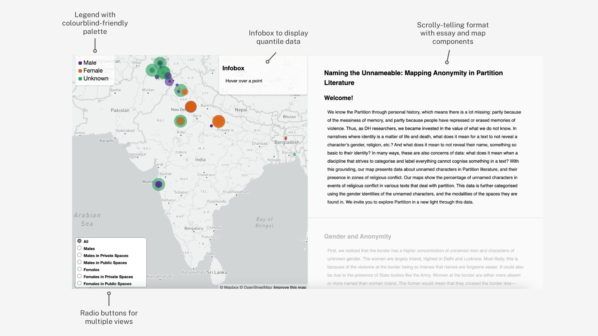

An interactive exploration of unnamed characters across literature from the 1947
India-Pakistan
Partition. These maps represent data about these characters in zones of religious conflict, along
with gender and space-modality views.
Skip ahead to the product!
Team
Nishtha Das, Aishwarya Dani, Ila
Manish, Shreya Khobragade
The India-Pakistan Partition, which took place in 1947, is a significant event in
global history with lasting repercussions. The Partition marked the end of British colonial rule in the
Indian subcontinent and the creation of two independent nations – India and Pakistan. This seismic event
was accompanied by widespread communal violence, mass migrations, and large-scale loss of life.
The Partition was globally significant due to its role in the broader narrative of
decolonisation, its impact on regional geopolitics, and the ongoing implications for communal relations
in South Asia. Its effects are still felt today, making it a crucial chapter in history and an abundant
area for study.
Citizens of India and Pakistan know the Partition through personal history, which means a lot is
missing: partly because of the messiness of memory, and partly because people have repressed or erased
memories of violence. Thus, in traditional accounts of the Partition, there is reason to cast doubt on
existing and missing data. In narratives where identity is a matter of life and death, what does it mean
for a text to not reveal a character’s gender, religion, etc.? And what does it mean to not reveal their
name, something so basic to their identity? In many ways, these are also concerns of data: what does it
mean when a discipline that strives to categorise and label everything cannot cognise something in a
text?
IDEATION
In the months leading up to this project, our team had already been logging low-level
data on novels and poems from Partition literature. This included data on characters, locations and
events. We spent a lot of time fleshing out the data for each data group, given the weight of the
stories we were dealing with. This required a great deal of inference to gauge information like a
character’s links to a mob or a location’s religious affinity. Based on such insights, we had a solid
point of reference to draw relations between data points.
As a Digital Humanities project, there was significant scope for technical intervention. Hence, to stay
true to our goal of bringing background characters to light, we planned to extract unnamed characters
from our database and conduct a qualitative analysis on the same. Additionally, we wished to focus on
one or two texts that dealt with character naming in unique ways. From our earlier close reading of the
texts, we knew the two would be Saadat Hasan Manto’s Mozail and Khushwant Singh’s A Train to
Pakistan.
IMPLEMENTATION
Through targeted querying of the database, we were able to source the numbers of
unnamed characters at any given event or location. Since we wanted to focus on high-intensity events, we
picked events that featured religious conflict in our Partition texts. Our maps show the percentage of
unnamed characters in events of religious conflict in various texts that deal with partition. This data
is further categorised using the gender identities of the unnamed characters, and the modalities of the
spaces they are found in.
In developing the interactive essay, we employed a scrolly-telling format, which involves presenting
content dynamically and sequentially as the user scrolls through the content. To show changes in
geospatial elements, we used Mapbox for a flexible map component. One of our priorities was to describe
our findings in an intuitive format since the site was to be published online for perusal. Hence, the
interface was designed to be easily navigable, with a particular emphasis on the reader’s independent
exploration. This means that a visitor of the site should be able to play around with data
visualisations and draw conclusions in conjunction with our existing research. This was achieved through
the incorporation of multiple view options with radio buttons, along with clear legends and thoughtful
styling. Additionally, accessibility was a key consideration. We used colourblind-friendly palettes
throughout to ensure inclusivity and a seamless experience for all users.

Final site interface
NEXT STEPS
If given a chance to revise or build upon our work, I would focus on the following:
Tracking character paths:
By focusing on a character’s geospatial and narrative path, we could get insight into the
lifespan of unnamed characters within the novel. This would provide a nuanced perspective on the
role they play within conflict.
Improved interactivity:
The site can actively guide readers toward specific views throughout the essay. Explicit
pointers and tooltips can be integrated into the narrative, encouraging readers to experiment
with the data.
TAKEAWAYS
This was an ideal introduction to the application of computational methods in
humanities research. I realised the power of data in uncovering hidden narratives since we
focused on
amplifying the voices of individuals otherwise overlooked in literary accounts. Another key lesson was
our conscious commitment to pervasive inclusivity design. This ensured that our work was
accessible to
a large audience across disciplines. That was my biggest takeaway, working with and for
multidisciplinary groups. I was the sole Computer Science student in the group and used this
unique opportunity
to collaborate with Literature students.